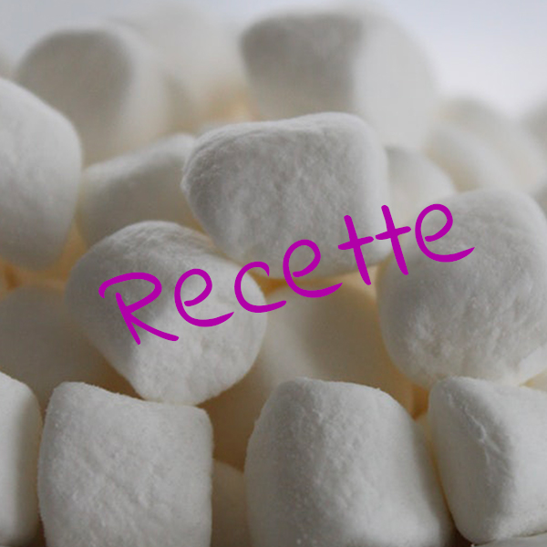

Les Friandises
Tout simplement bon

INGRÉDIENTS
PRÉPARATION
2.Dans un bol, mélanger le sucre et l'eau chaude. Ajouter la vanille.
3.Dans un autre bol, faire gonfler la gélatine dans l'eau froide pendant 5 minutes. Faire fondre complètement la gélatine au micro-ondes. L'ajouter au mélange de sucre.
4.Battre environ 10 minutes au batteur électrique ou jusqu'à ce que le mélange ait la texture d'une meringue molle. Étaler dans le moule et laisser prendre la guimauve pendant une nuit.
5.Dans une assiette, mélanger le sucre à glacer et la fécule de maïs. Couper la guimauve en cubes et la rouler dans le mélange de sucre à glacer. Conserver à la température de la pièce.